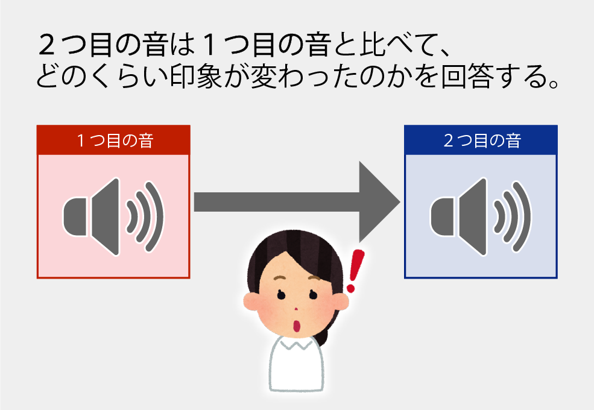

<!DOCTYPE html>
<html>
  <head>
    <script src="./dist/jspsych.js"></script>
    <script src="./dist/plugin-survey-likert.js"></script>
    <script src="./dist/plugin-audio-button-response.js"></script>
    <script src="./dist/plugin-html-button-response.js"></script>
    <script src="./dist/plugin-preload.js"></script>
    <script src="./dist/plugin-instructions.js"></script>
    <script src="./dist/plugin-survey-text.js"></script>
    <script src="./dist/plugin-fullscreen.js"></script>
    <link rel="stylesheet" href="./dist/jspsych.css" />
    <link rel="stylesheet" href="examples/css/style.css" />
    <script src="examples/js/play_audio.js"></script>
    <script src="examples/js/helper.js"></script>
    <link rel=”icon” href="image/favicon.ico">
    <link href="https://use.fontawesome.com/releases/v5.6.1/css/all.css" rel="stylesheet">
    <title>【加齢性難聴に伴う楽曲の印象変化～周波数特性とテンポに着目して～】における実験</title>
  </head>
  <body></body>
  <script>

    var jsPsych = initJsPsych({
      on_finish: function() {
        jsPsych.data.displayData();
      }
    });

    var scale1 = ["変わらない","", "", "", "", "","変わった"];

    var scale2 = ["聞きにくい","", "", "どちらでもない", "", "","聞きやすい"];

    var scale3 = ["不快","", "", "どちらでもない", "", "","快"];

    var scale4 = ["遅い","", "", "どちらでもない", "", "","速い"];

    var scale5 = ["ない","", "", "どちらでもない", "", "","ある"];

    var page_num = 0;

    var ntrials = 30;

    var pra_ntrials = 3;
    
    var sound_index = [];

    var pra_sound_index = [];;

    pra_filename = [["examples/sound/Practice/HIsim_千本桜_Agrm70yr_Male_Cmprs100_Src70dB.wav","examples/sound/Practice/Nrmlz_千本桜_Src70dB.wav"],
                    ["examples/sound/Practice/HIsim_04 さくら (独唱)_Agrm70yr_Male_Cmprs50_Src70dB.wav","examples/sound/Practice/Nrmlz_04 さくら (独唱)_Src70dB.wav"],
                    ["examples/sound/Practice/HIsim_13 世界に一つだけの花 (シングル・ヴァージョン)_Agrm70yr_Male_Cmprs50_Src70dB.wav","examples/sound/Practice/Nrmlz_13 世界に一つだけの花 (シングル・ヴァージョン)_Src70dB.wav"]]

    filename = [["examples/sound/HIsim_20221114T135331/HIsim_01 Jupiter_Agrm70yr_Male_Cmprs50_Src70dB.wav","examples/sound/Nrmlz_20221114T135331/Nrmlz_01 Jupiter_Src70dB.wav"],
                ["examples/sound/HIsim_20221114T135331/HIsim_02 ワダツミの木_Agrm70yr_Male_Cmprs50_Src70dB.wav","examples/sound/Nrmlz_20221114T135331/Nrmlz_02 ワダツミの木_Src70dB.wav"],
                ["examples/sound/HIsim_20221114T135331/HIsim_03 瞳をとじて_Agrm70yr_Male_Cmprs50_Src70dB.wav","examples/sound/Nrmlz_20221114T135331/Nrmlz_03 瞳をとじて_Src70dB.wav"],
                ["examples/sound/HIsim_20221114T135331/HIsim_04 さくら (独唱)_Agrm70yr_Male_Cmprs50_Src70dB.wav","examples/sound/Nrmlz_20221114T135331/Nrmlz_04 さくら (独唱)_Src70dB.wav"],
                ["examples/sound/HIsim_20221114T135331/HIsim_05 月のしずく_Agrm70yr_Male_Cmprs50_Src70dB.wav","examples/sound/Nrmlz_20221114T135331/Nrmlz_05 月のしずく_Src70dB.wav"],
                ["examples/sound/HIsim_20221114T135331/HIsim_06 Don't Leave Me_Agrm70yr_Male_Cmprs50_Src70dB.wav","examples/sound/Nrmlz_20221114T135331/Nrmlz_06 Don't Leave Me_Src70dB.wav"],
                ["examples/sound/HIsim_20221114T135331/HIsim_07 SAY YES-01_Agrm70yr_Male_Cmprs50_Src70dB.wav","examples/sound/Nrmlz_20221114T135331/Nrmlz_07 SAY YES-01_Src70dB.wav"],
                ["examples/sound/HIsim_20221114T135331/HIsim_08 花 -Memento-Mori-_Agrm70yr_Male_Cmprs50_Src70dB.wav","examples/sound/Nrmlz_20221114T135331/Nrmlz_08 花 -Memento-Mori-_Src70dB.wav"],
                ["examples/sound/HIsim_20221114T135331/HIsim_09 my graduation_Agrm70yr_Male_Cmprs50_Src70dB.wav","examples/sound/Nrmlz_20221114T135331/Nrmlz_09 my graduation_Src70dB.wav"],
                ["examples/sound/HIsim_20221114T135331/HIsim_10 花_Agrm70yr_Male_Cmprs50_Src70dB.wav","examples/sound/Nrmlz_20221114T135331/Nrmlz_10 花_Src70dB.wav"],
                ["examples/sound/HIsim_20221114T135331/HIsim_11 Automatic_Agrm70yr_Male_Cmprs50_Src70dB.wav","examples/sound/Nrmlz_20221114T135331/Nrmlz_11 Automatic_Src70dB.wav"],
                ["examples/sound/HIsim_20221114T135331/HIsim_12 チェリー_Agrm70yr_Male_Cmprs50_Src70dB.wav","examples/sound/Nrmlz_20221114T135331/Nrmlz_12 チェリー_Src70dB.wav"],
                ["examples/sound/HIsim_20221114T135331/HIsim_13 世界に一つだけの花 (シングル・ヴァージョン)_Agrm70yr_Male_Cmprs50_Src70dB.wav","examples/sound/Nrmlz_20221114T135331/Nrmlz_13 世界に一つだけの花 (シングル・ヴァージョン)_Src70dB.wav"],
                ["examples/sound/HIsim_20221114T135331/HIsim_14 Can You Keep A Secret-_Agrm70yr_Male_Cmprs50_Src70dB.wav","examples/sound/Nrmlz_20221114T135331/Nrmlz_14 Can You Keep A Secret-_Src70dB.wav"],
                ["examples/sound/HIsim_20221114T135331/HIsim_15 涙のキッス-01_Agrm70yr_Male_Cmprs50_Src70dB.wav","examples/sound/Nrmlz_20221114T135331/Nrmlz_15 涙のキッス-01_Src70dB.wav"],
                ["examples/sound/HIsim_20221114T135331/HIsim_16 空と君のあいだに_Agrm70yr_Male_Cmprs50_Src70dB.wav","examples/sound/Nrmlz_20221114T135331/Nrmlz_16 空と君のあいだに_Src70dB.wav"],
                ["examples/sound/HIsim_20221114T135331/HIsim_17 Winter, again_Agrm70yr_Male_Cmprs50_Src70dB.wav","examples/sound/Nrmlz_20221114T135331/Nrmlz_17 Winter, again_Src70dB.wav"],
                ["examples/sound/HIsim_20221114T135331/HIsim_18 ラブ・ストーリーは突然に-01_Agrm70yr_Male_Cmprs50_Src70dB.wav","examples/sound/Nrmlz_20221114T135331/Nrmlz_18 ラブ・ストーリーは突然に-01_Src70dB.wav"],
                ["examples/sound/HIsim_20221114T135331/HIsim_19 悲しみは雪のように-01_Agrm70yr_Male_Cmprs50_Src70dB.wav","examples/sound/Nrmlz_20221114T135331/Nrmlz_19 悲しみは雪のように-01_Src70dB.wav"],
                ["examples/sound/HIsim_20221114T135331/HIsim_20 それが大事-01_Agrm70yr_Male_Cmprs50_Src70dB.wav","examples/sound/Nrmlz_20221114T135331/Nrmlz_20 それが大事-01_Src70dB.wav"],
                ["examples/sound/HIsim_20221114T135331/HIsim_21 硝子の少年_Agrm70yr_Male_Cmprs50_Src70dB.wav","examples/sound/Nrmlz_20221114T135331/Nrmlz_21 硝子の少年_Src70dB.wav"],
                ["examples/sound/HIsim_20221114T135331/HIsim_22 どんなときも。-01_Agrm70yr_Male_Cmprs50_Src70dB.wav","examples/sound/Nrmlz_20221114T135331/Nrmlz_22 どんなときも。-01_Src70dB.wav"],
                ["examples/sound/HIsim_20221114T135331/HIsim_23 Timing 〜タイミング〜_Agrm70yr_Male_Cmprs50_Src70dB.wav","examples/sound/Nrmlz_20221114T135331/Nrmlz_23 Timing 〜タイミング〜_Src70dB.wav"],
                ["examples/sound/HIsim_20221114T135331/HIsim_24 恋愛レボリューション21_Agrm70yr_Male_Cmprs50_Src70dB.wav","examples/sound/Nrmlz_20221114T135331/Nrmlz_24 恋愛レボリューション21_Src70dB.wav"],
                ["examples/sound/HIsim_20221114T135331/HIsim_25 青春アミーゴ_Agrm70yr_Male_Cmprs50_Src70dB.wav","examples/sound/Nrmlz_20221114T135331/Nrmlz_25 青春アミーゴ_Src70dB.wav"],
                ["examples/sound/HIsim_20221114T135331/HIsim_26 浪漫飛行_Agrm70yr_Male_Cmprs50_Src70dB.wav","examples/sound/Nrmlz_20221114T135331/Nrmlz_26 浪漫飛行_Src70dB.wav"],
                ["examples/sound/HIsim_20221114T135331/HIsim_27 おどるポンポコリン_Agrm70yr_Male_Cmprs50_Src70dB.wav","examples/sound/Nrmlz_20221114T135331/Nrmlz_27 おどるポンポコリン_Src70dB.wav"],
                ["examples/sound/HIsim_20221114T135331/HIsim_28 independent_Agrm70yr_Male_Cmprs50_Src70dB.wav","examples/sound/Nrmlz_20221114T135331/Nrmlz_28 independent_Src70dB.wav"],
                ["examples/sound/HIsim_20221114T135331/HIsim_29 HELLO_Agrm70yr_Male_Cmprs50_Src70dB.wav","examples/sound/Nrmlz_20221114T135331/Nrmlz_29 HELLO_Src70dB.wav"],
                ["examples/sound/HIsim_20221114T135331/HIsim_30 今すぐKiss Me_Agrm70yr_Male_Cmprs50_Src70dB.wav","examples/sound/Nrmlz_20221114T135331/Nrmlz_30 今すぐKiss Me_Src70dB.wav"],]


    var fullscreen_trial = {
      type: jsPsychFullscreen,
      fullscreen_mode: true
    };

    var preload = {
        type: jsPsychPreload,
        auto_preload: true
    }

    var trial_1 = {
      type: jsPsychSurveyText,
      questions:[
        {prompt:'参加者IDを入力して"Continue"を押してください',columns: 20, required: true, name: 'participantID'},
      ],
      on_start:function(){
        for(i=0;i<ntrials;i++){sound_index[i]=i;}
        for(i=0;i<pra_ntrials;i++){pra_sound_index[i]=i;}
        sound_index = create_index(sound_index);
        pra_sound_index = create_index(pra_sound_index);
      },
    };

    var instruct = {
      type: jsPsychInstructions,
      pages: [
      '<h1>Instruction</h1>' +
      '<br>' + 
      '<div class="instruct-page">'+
      '<ul><li>本実験では、連続して再生される聞こえの異なる２つの音の印象の変化を質問します。</li><li>実験参加者は２つの音を聞き比べ、「２つ目の音は１つ目の音に比べてどのくらい印象が変わったか」を項目（全５項目）ごとに回答してください。</li></ul></div>' +
      '</img>'+
      '<div class="instruct-page">'+
      '<ul><li>質問数は30で、時間は目安として30~45分ほどかかります。途中休憩をとったり目安の時間を越しても問題はありません。</li><li>音は何度でも聞くことができます。もう一度再生するには、「再生ボタン」をクリックしてください。</li><li>項目への回答が終わりましたら画面下の「Continue」クリックして次の項目に進んでください。</li><li>何か質問がある場合は実験実施者へお聞きください。実験の途中でも問題ありません。</li></ul>'+
      '</div>',
      'それではまず、練習として質問を３つ行います。</br>準備が整いましたら"Next"を押してください。'
      ],
      show_clickable_nav: true
    }

    var practice_trial = {
      type: jsPsychSurveyLikert,
        stimulus: '',
        questions: [
          {prompt: "Q1 : 全体的な印象の変化", name: 'Q1', labels: scale1, required: true},
          {prompt: "Q2 : 聞きやすさ", name: 'Q2', labels: scale2, required: true},
          {prompt: "Q3 : 快・不快", name: 'Q3', labels: scale3, required: true},
          {prompt: "Q4 : テンポ感", name: 'Q4', labels: scale4, required: true},
          {prompt: "Q5 : リズム感", name: 'Q5', labels: scale5, required: true}
        ],
        scale_width: 700, 
        on_start:function(trial){
          pre_mixed_file = shuffle_file([pra_filename[pra_sound_index[page_num]]]);
          connected_play_audiofile(pre_mixed_file[0]);
          jsPsych.data.get().push(pre_mixed_file[0]);
          trial.stimulus = ('<header class="site-header"><div class="wrapper site-header__wrapper">').concat("<h4> - 練習 - </br></br> 実験 : ").concat((page_num+1).toString()).concat(" / ").concat(pra_ntrials.toString()).concat("</h4>")
            .concat("<button type='button' id='btn-play' onclick='connected_play_audiofile(pre_mixed_file[0])'; class='jspsych-btn2'>再生</button>").concat('<nav class="nav"></nav></div></header>');
        },
        randomize_order: true,
        on_finish:function(){
        stop_play_audiofile();
        page_num++;
      },
    }

    var pra_timeline = {
      timeline:[practice_trial],
      repetitions:pra_ntrials,
    }

    var buffer_trial = {
      type: jsPsychHtmlButtonResponse,
      stimulus: 'それでは、ここから本番となります。</br>質問数は30です。</br>準備が整いましたら"Next"を押してください。',
      choices: ['Next'],
      on_finish:function(){
        page_num = 0;
      }
    }

    var likert_trial = {
        type: jsPsychSurveyLikert,
        stimulus: '',
        questions: [
          {prompt: "Q1 : 全体的な印象の変化", name: 'Q1', labels: scale1, required: true},
          {prompt: "Q2 : 聞きやすさ", name: 'Q2', labels: scale2, required: true},
          {prompt: "Q3 : 快・不快", name: 'Q3', labels: scale3, required: true},
          {prompt: "Q4 : テンポ感", name: 'Q4', labels: scale4, required: true},
          {prompt: "Q5 : リズム感", name: 'Q5', labels: scale5, required: true}
        ],
        scale_width: 700, 
        on_start:function(trial){
          mixed_file = shuffle_file([filename[sound_index[page_num]]]);
          connected_play_audiofile(mixed_file[0]);
          jsPsych.data.get().push(mixed_file[0]);
          trial.stimulus = 
          ('<header class="site-header"><div class="wrapper site-header__wrapper">').concat("<h4> - 本番 - </br></br> 実験 : ").concat((page_num+1).toString()).concat("/").concat(ntrials.toString()).concat("</h4>")
            .concat("<button type='button' onclick='connected_play_audiofile(mixed_file[0])'; class='jspsych-btn2'>再生</button></h4>").concat('<nav class="nav"></nav></div></header>');
        },
        randomize_order: true,
        on_finish:function(){
          stop_play_audiofile();
          page_num++;
        }
    };

    var trial_count = {
      timeline:[likert_trial],
      repetitions: ntrials,
    }

    var comment = {
      type: jsPsychSurveyText,
      questions: [
        {prompt: '実験に関して何か質問・コメント等ありましたら記述してください', rows: 5}
      ]
    }

    var thankyou = {
      type: jsPsychHtmlButtonResponse,
        stimulus: '質問は以上です。お疲れ様でした。</br>終了したことを実験実施者へお伝えください。</br>画面はこのままの状態にしておいてください。</br>ご協力いただきありがとうございました。',
        choices:['Download data'],
        on_finish:function(){
          jsPsych.data.get().localSave('csv', 'data.csv');
        }
    }
    jsPsych.run([fullscreen_trial, trial_1, instruct, pra_timeline, buffer_trial, trial_count, comment,thankyou]);
    
  </script>
</html>
